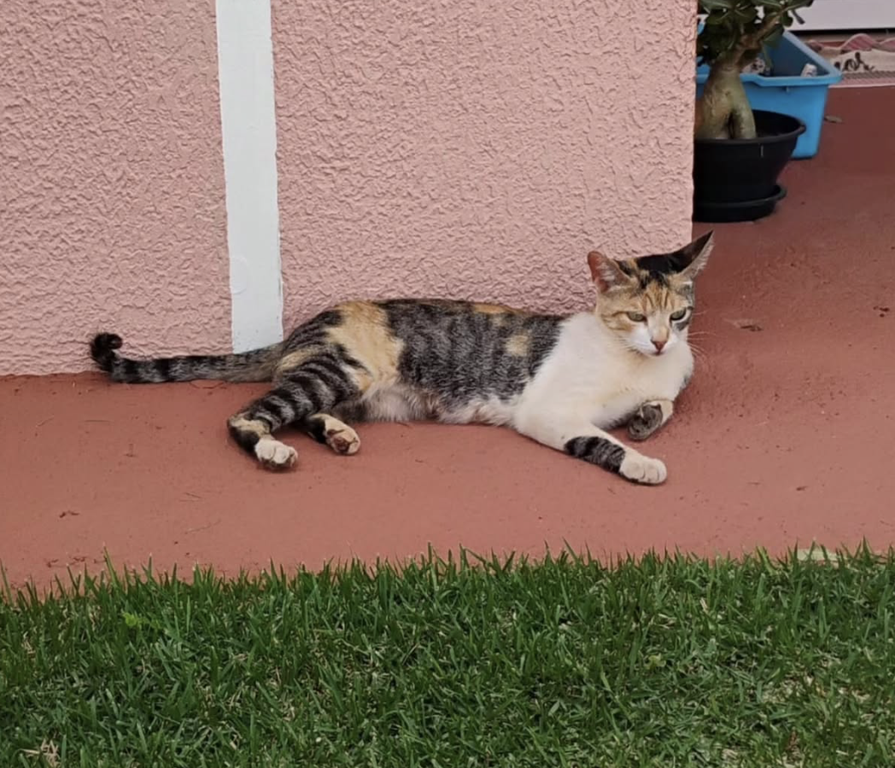
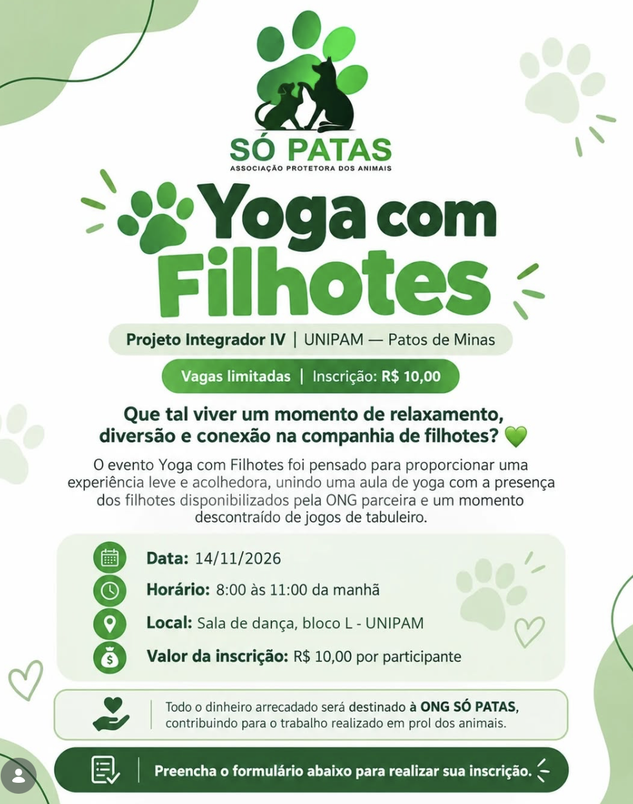
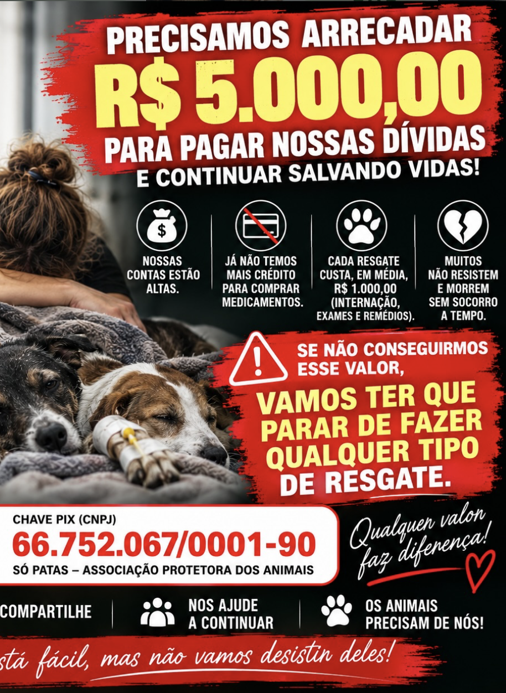
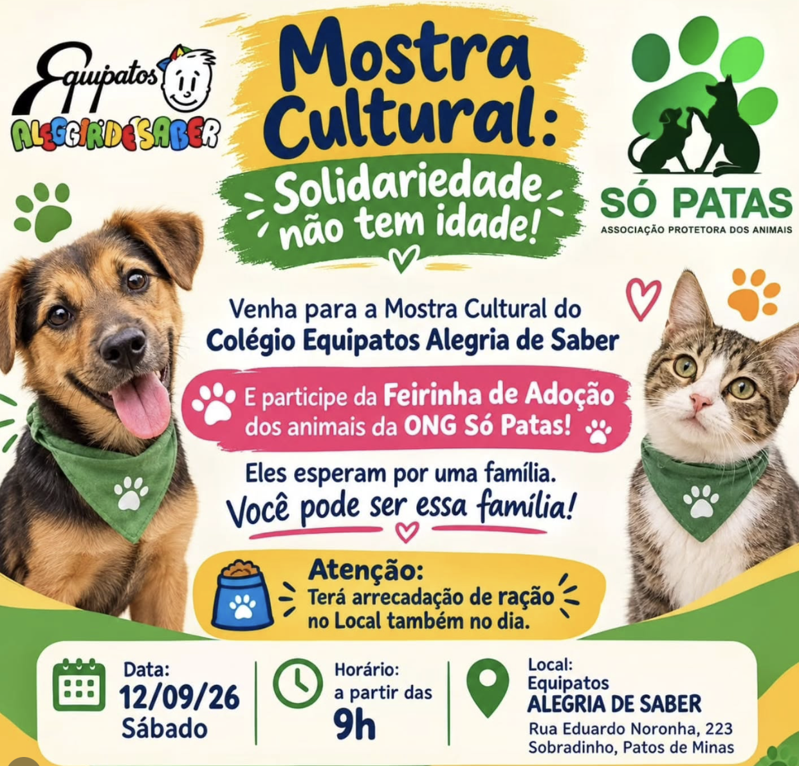
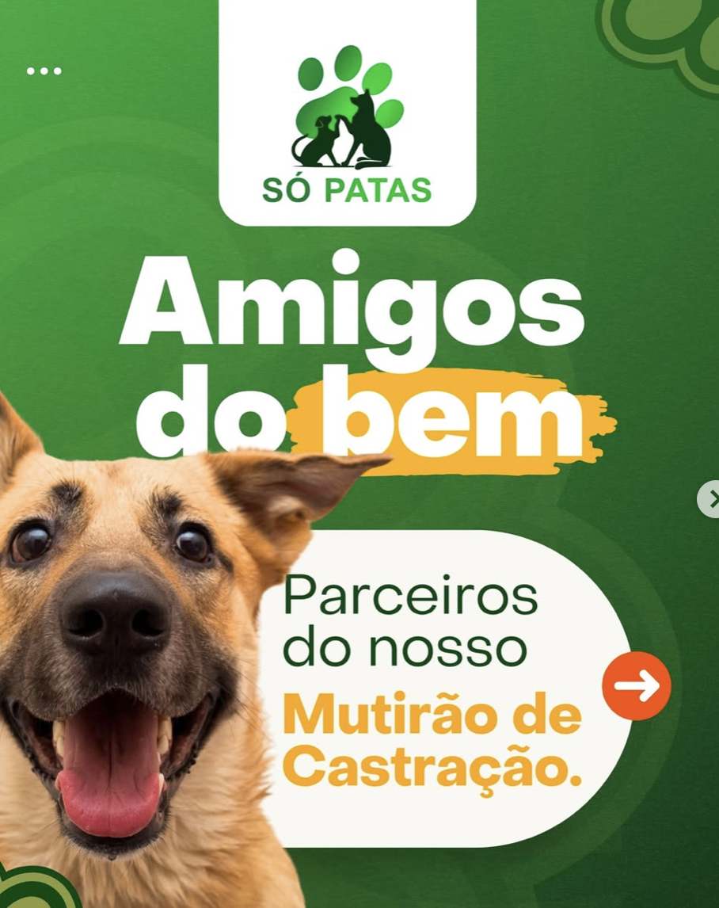
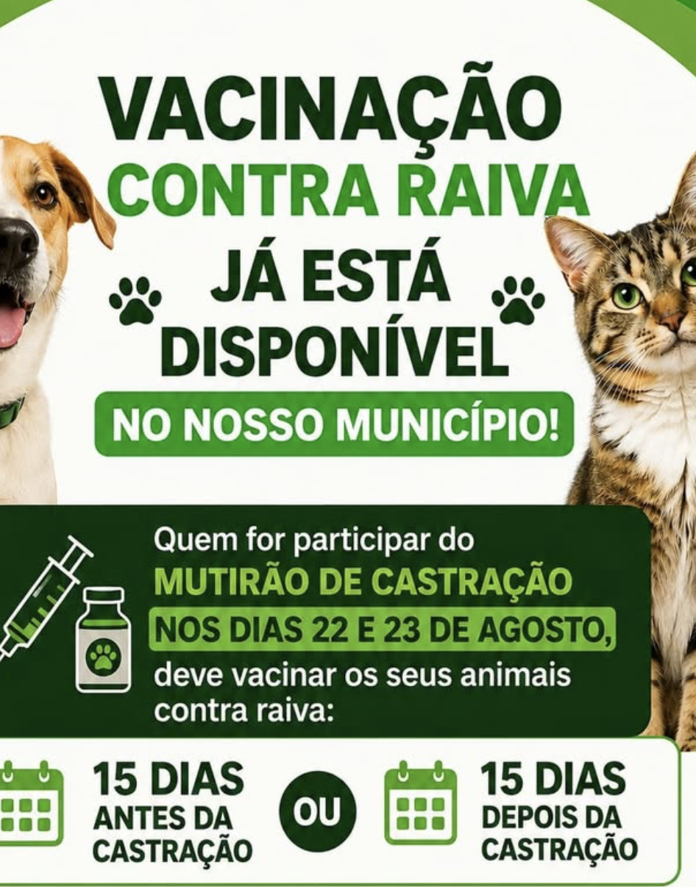
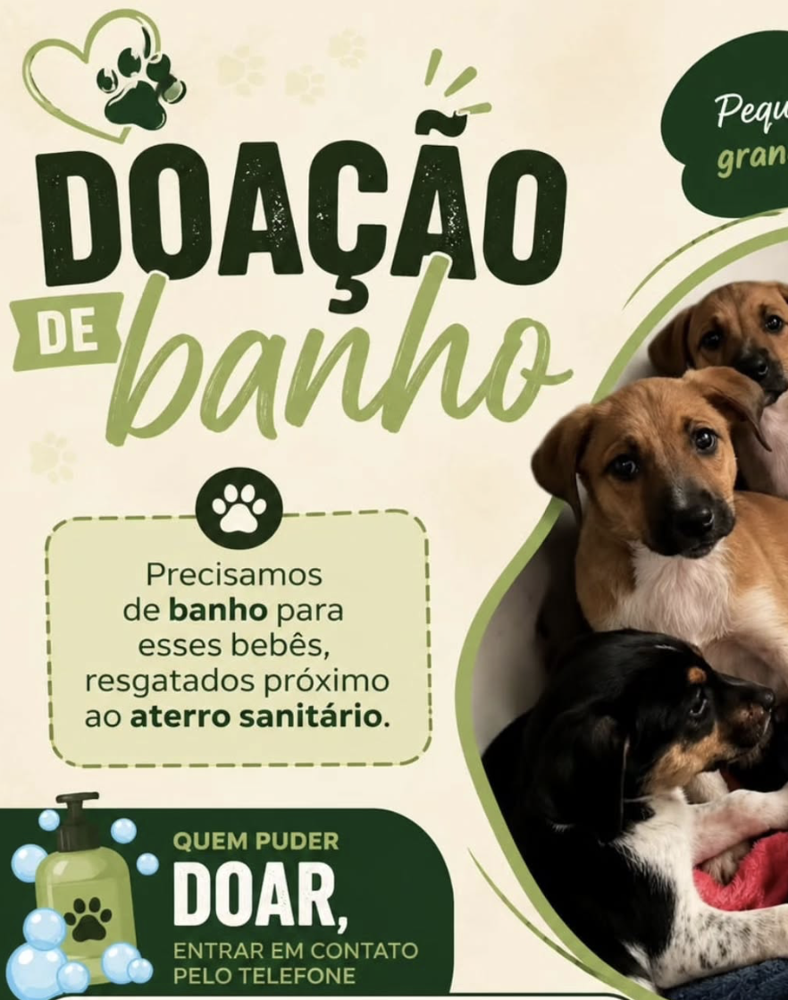
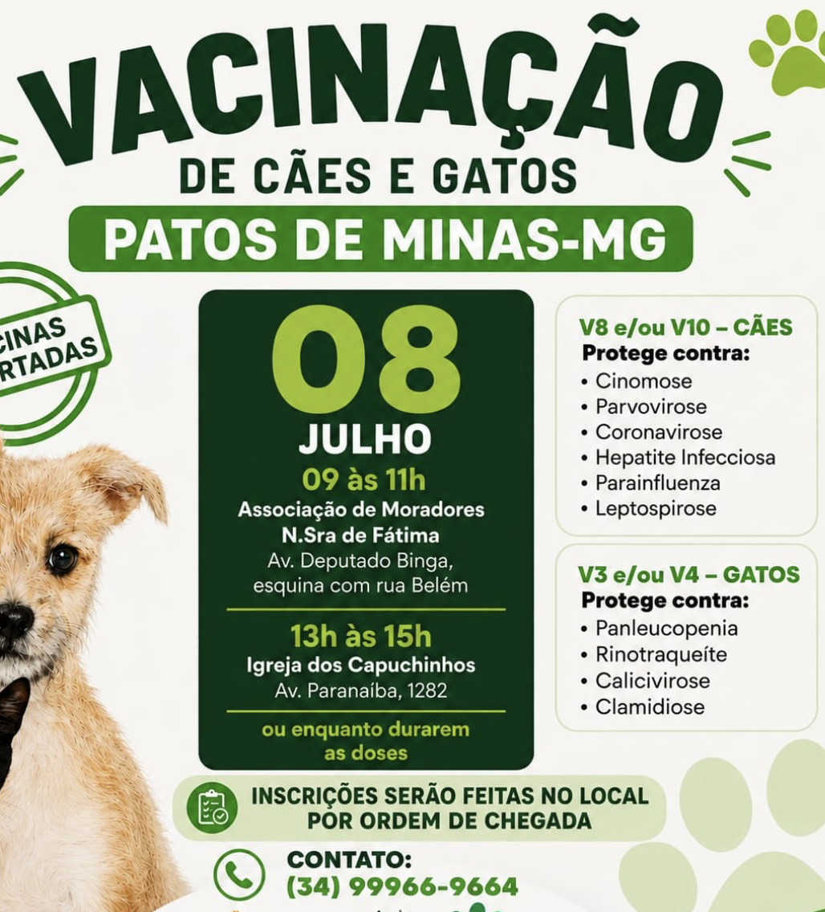

ADOÇÃO
Essa mãezinha tricolor e seus dois filhotinhos (laranjinha e frajola) apareceram no Condomínio Moradas e estão à procura de um lar cheio de amor e carinho! 🏡🐾 📞 Contato: (34) 99708-7281 ❤️ Adote amor! Compartilhe! 🐾
Ler mais|

Essa mãezinha tricolor e seus dois filhotinhos (laranjinha e frajola) apareceram no Condomínio Moradas e estão à procura de um lar cheio de amor e carinho! 🏡🐾 📞 Contato: (34) 99708-7281 ❤️ Adote amor! Compartilhe! 🐾
Ler mais
Já imaginou praticar yoga na companhia de filhotinhos que estarão disponíveis para adoção? Uma experiência diferente, leve e cheia de carinho espera por você!
No dia 14 de novembro, a @ong_sopatas estará neste evento especial, que une bem-estar, diversão e a oportunidade de conhecer nossos pequenos peludos, que estam em busca de um lar cheio de amor. 🐾
Ler mais
Precisamos arrecadar R$ 5.000,00 para pagar nossas dívidas e voltar a resgatar animais. Nossas medicações acabaram, estamos sem crédito para comprar mais e chegamos ao nosso limite.
Se cada um doasse apenas R$ 10,00, conseguiríamos arrecadar muito mais do que precisamos! Não deixem a @ong_sopatas parar! Os animais precisam de nós diante da negligência da @prefeiturapatosdeminas 💚 PIX (CNPJ): 66.752.067/0001-90 Doe R$ 10,00. Compartilhe. Ajude a salvar vidas! 🐾
Ler mais
Venha participar da Mostra Cultural do Colégio Equipatos Alegria de Saber e aproveite para conhecer os animais que estarão esperando por uma oportunidade de encontrar um lar! Eles esperam por uma família, por carinho e por uma nova chance.
ATENÇÃO: Também teremos arrecadação de ração no local. Sua doação pode ajudar muitos animais!
Ler mais
Um grande evento voltado ao bem-estar animal movimentou Patos de Minas no fim de semana. A programação especial organizada pela ONG Só Patas reuniu mutirão de castração, feira de adoção responsável, arrecadação de ração e bazar beneficente. A ação envolveu voluntários, estudantes e motoclubes em um forte esforço de conscientização e controle populacional de cães e gatos na cidade.
Ler mais
Se o seu animal está agendado para o Mutirão de Castração dos dias 22 e 23 de agosto, fique atento a uma orientação muito importante. A vacinação antirrábica já está disponível em nossa cidade, mas ela não deve ser aplicada próxima à cirurgia. O intervalo recomendado é de, no mínimo, 15 dias antes ou 15 dias depois da castração, contribuindo para a segurança e a recuperação do seu animal. Se o seu animal ainda não foi vacinado contra a raiva, programe-se para respeitar esse intervalo.
Ler mais
Esses bebês foram resgatados próximos ao aterro sanitário e agora só precisam de um pouco mais de carinho para ficarem limpinhos, cheirosos e prontos para conquistar um lar. Estamos procurando quem possa doar um banho e tosa para eles. Se você pode ajudar ou conhece um pet shop parceiro dessa causa, entre em contato: (34) 99669-1614.
Ler mais
Nos dias 7 e 8 de julho, vamos promover um grande mutirão de vacinação para proteger os animais da nossa cidade. Para participar, o tutor deve levar: CPF ou RG, Carteirinha de vacinação, Sacolas para recolher as fezes do animal, ser maior de 18 anos.
Ler maisNenhuma notícia encontrada